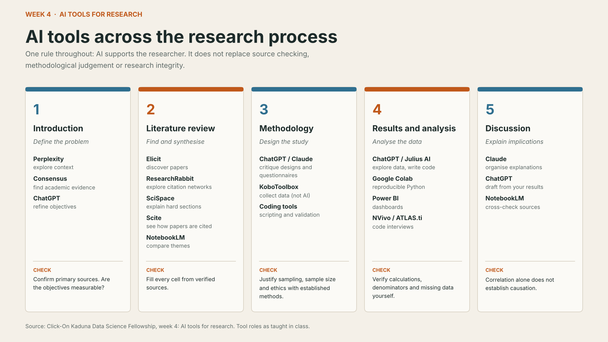
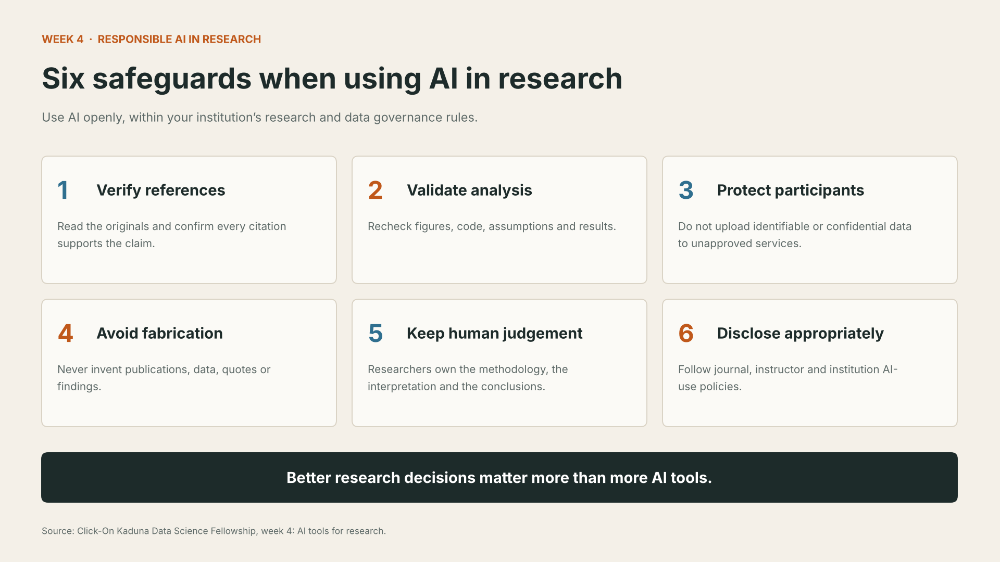

AI tools across the research process
AI supports the researcher. Source checking and research integrity stay with the researcher.

Problem
AI tools can speed up research, but they can also invent sources or hide weak analysis. Each stage of a study needs a different tool and a different check.
What I did
- Introduction: Perplexity and Consensus for background and evidence, ChatGPT for refining objectives.
- Literature review: Elicit, ResearchRabbit, SciSpace, Scite and NotebookLM.
- Methodology: ChatGPT or Claude to critique designs and questionnaires, KoboToolbox for collection.
- Results and analysis: ChatGPT or Julius AI, Google Colab and Power BI, with NVivo or ATLAS.ti for qualitative coding.
- Discussion: Claude, ChatGPT and NotebookLM, with the reminder that correlation alone does not establish causation.
Six safeguards
- Verify references
- Validate analysis
- Protect participants
- Avoid fabrication
- Keep human judgement
- Disclose appropriately
Tools
More images
